Un patrón de diseño es una solución a un problema que se ha presentado en múltiples ocasiones y nos sirve de base para buscar soluciones a problemas de desarrollo del software.
Un patrón contiene una solución probada a un problema en un determinado contexto.
Un patrón de diseño:
Los patrones pueden complicar el diseño, introduciendo clases adicionales, por ello es considerable utilizarlos en su justa medida.
Los patrones tienen como objetivo, aumentar la cohesión y disminuir el acoplamiento.
La información de los patrones se recopila en un catálogo de patrones.
Constructor Prototipo Singleton |
Compuesto Fachada Proxy |
Mediador Observador Estado Método plantilla |
Ayudan en la tarea de construcción de nuevos objetos de características complejas.
Es un patrón de diseño creacional que nos permite producir familias de objetos similares sin especificar sus clases concretas.
Permite crear una interface de manipulación común para una familia de objetos.
Ejemplos:
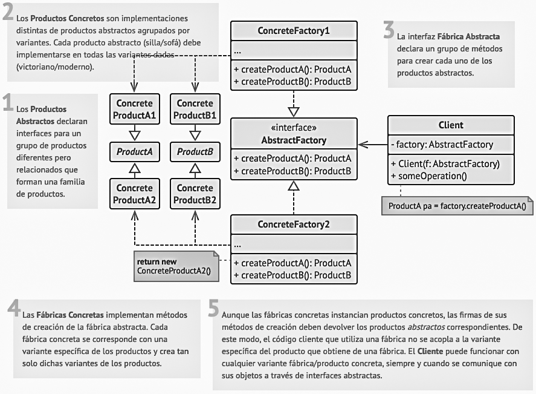
Es un patrón de diseño creacional que nos permite el mismo proceso de construcción para diferentes resultados.
Encapsula el método de construcción y devuelve una instancia concreta con las características seleccionadas.
Ejemplo:
Aplicación de conversión de vídeo:
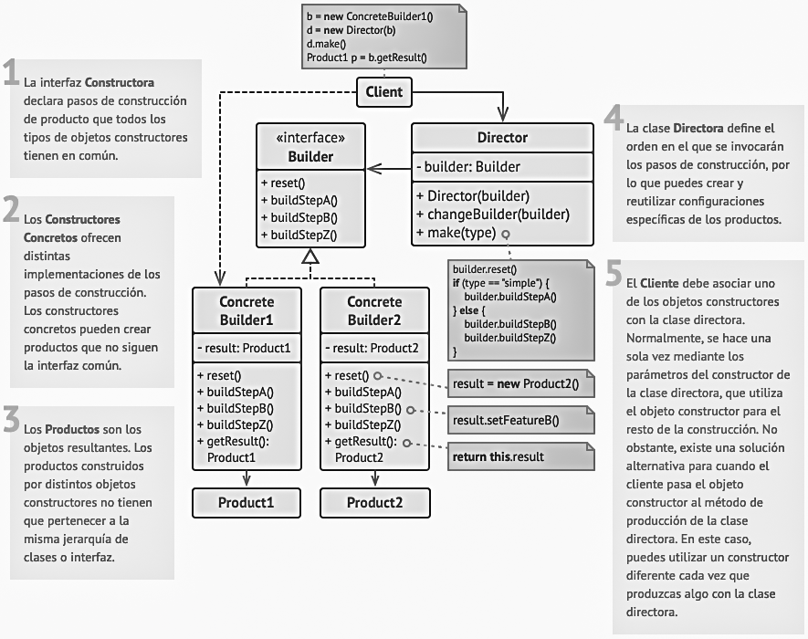
Es un patrón de diseño creacional que nos permite copiar objetos existentes sin que el código dependa de sus clases.
El prototipo implementa una interfaz clonar( ), creando copias idénticas o con ciertas modificaciones.
Ejemplos:
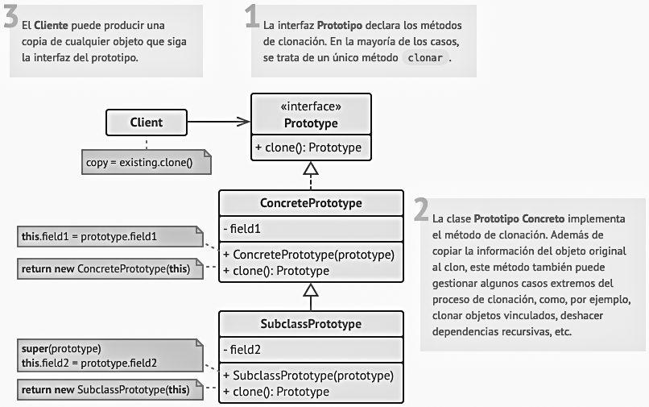
Es un patrón de diseño creacional que nos permite asegurarnos de que una clase tenga una única instancia, a la vez que proporciona un punto de acceso global a dicha instancia.
Ejemplos:
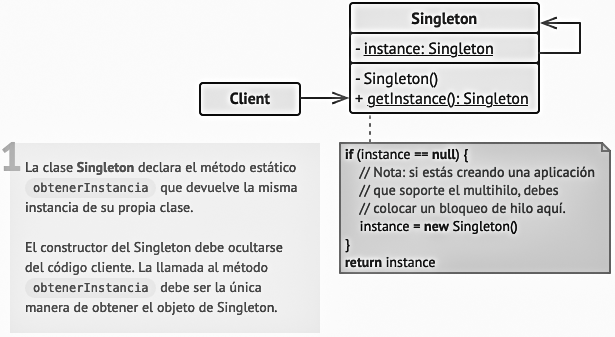
Ayudan a ensamblar objetos en estructuras más grandes manteniendo la flexibilidad y eficiencia.
Es un patrón de diseño estructural que permite la colaboración entre objetos con interfaces incompatibles.
Se intercala una nueva clase que hace el trabajo de traducción o adaptación.
Ejemplos:
Hay 2 maneras de implementación:
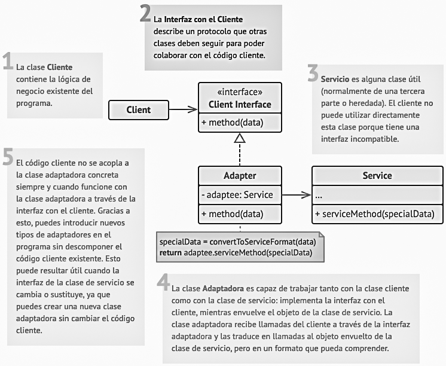
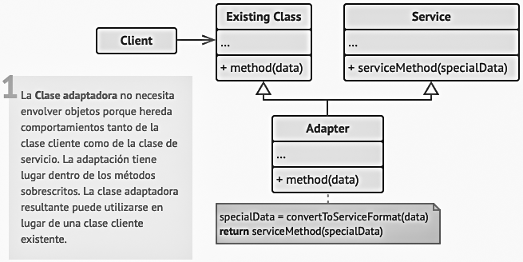
Es un patrón de diseño estructural que permite componer objetos en estructuras de árbol y trabajar con esas estructuras como si fueran objetos individuales.
Necesitamos una interface de manipulación común.
Se define una clase abstracta que representa tanto a las primitivas como sus contenedores.
Ejemplos:
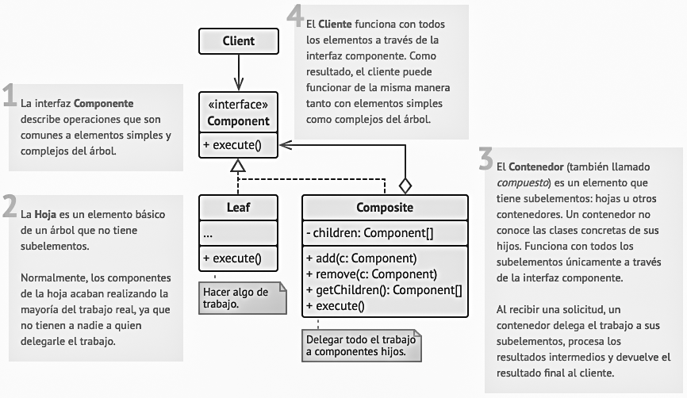
Es un patrón de diseño estructural que proporciona una interface unificada para interactuar con un conjunto de interfaces de otros objetos.
Es similar al adaptador, pero el adaptador adapta una clase concreta, la fachada esta pensada para reducir el acoplamiento.
Ejemplos:
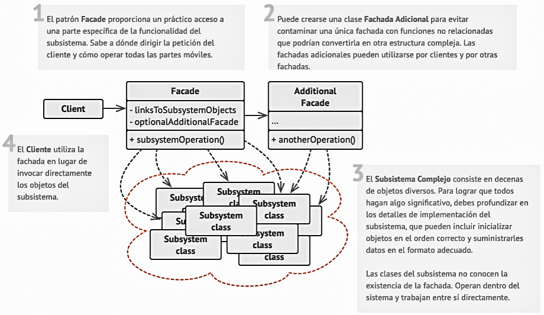
Es un patrón de diseño estructural que permite proporcionar un sustituto o marcador de posición para otro objeto. Un proxy controla el acceso al objeto original, permitiendo hacer algo antes o después de que la solicitud llegue al objeto original.
El proxy (apoderado) sustituye al objeto real (sujeto) y permite manipularlo de manera indirecta.
Ejemplos:
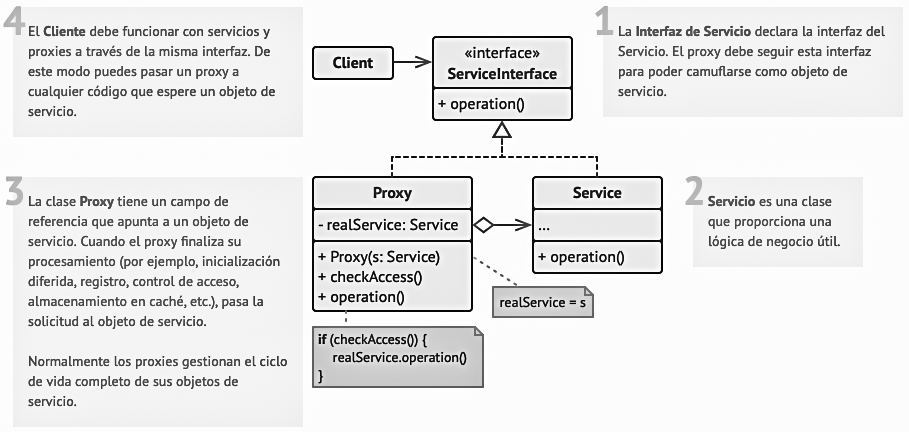
Utiles para trabajar con algoritmos y repartir responsabilidades entre diferentes objetos.
Es un patrón de diseño de comportamiento que te permite pasar solicitudes a lo largo de una cadena de manejadores. Al recibir una solicitud, cada manejador decide si la procesa o si la pasa al siguiente manejador de la cadena.
Ejemplos:
Ayuda contextual en una aplicación:
Proceso de eventos del ratón en un navegador.
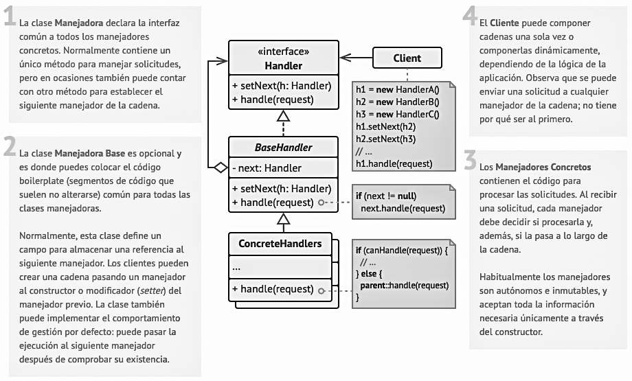
Es un patrón de diseño de comportamiento que te permite reducir el acoplamiento. El patrón restringe las comunicaciones directas entre los objetos, forzándolos a colaborar únicamente a través de un objeto mediador que controla y coordina las comunicaciones.
Ejemplos:
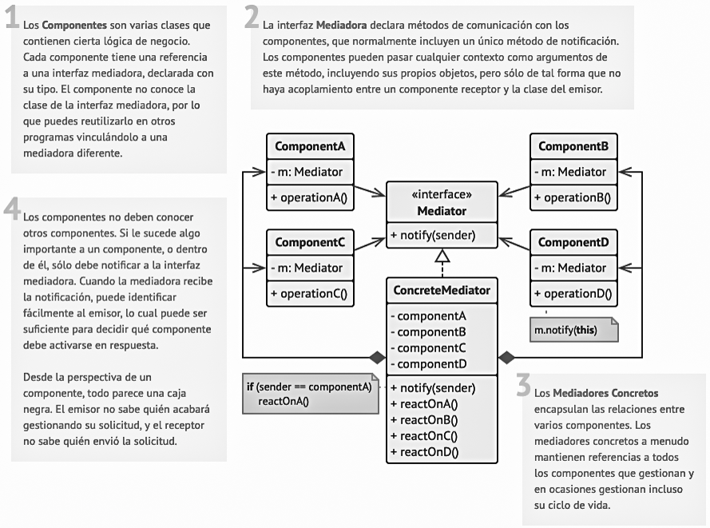
Es un patrón de diseño de comportamiento que te permite notificar a varios objetos sobre cambios que se producen en otro objeto.
Es un problema parecido al mediador, pero ahora solo se trata de notificar.
El patrón define dos tipos de objetos:
Ejemplos:
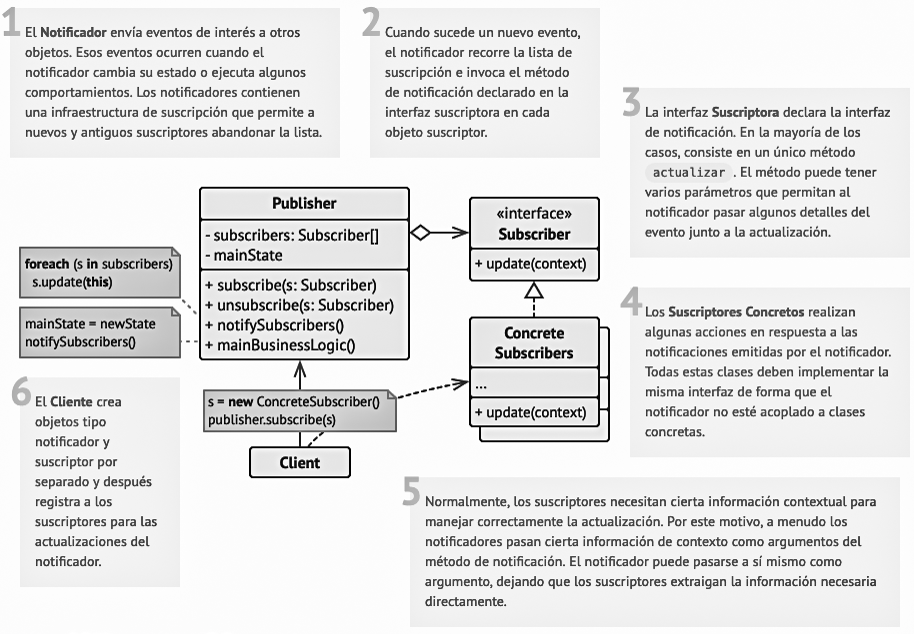
Es un patrón de diseño de comportamiento que permite a un objeto alterar su comportamiento cuando su estado interno cambia.
El patrón define una clase asociada que defina la funcionalidad concreta en cada caso.
Ejemplos:
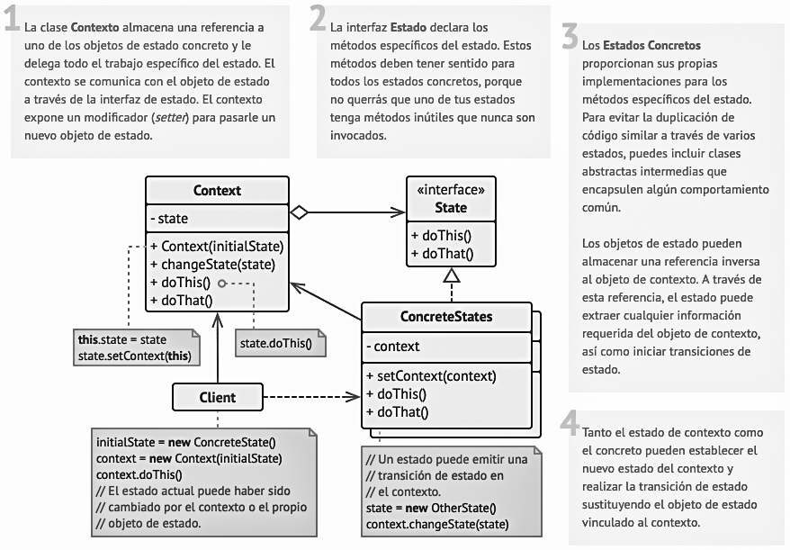
Es un patrón de diseño de comportamiento que define el esqueleto de un algoritmo en la superclase pero permite que las subclases sobrescriban pasos del algoritmo sin cambiar su estructura.
El patrón define una clase base con un método que implementa el esqueleto del algoritmo (método plantilla).
Ejemplos:
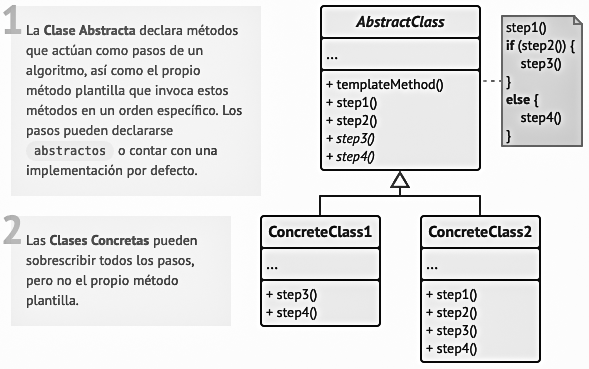